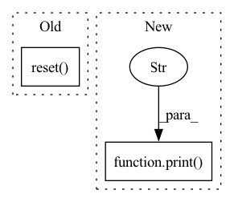

Pattern ID :9119
Before Change
// Run this to run all workflow automaticly
def main(self):
self.reset()
print("========== simulate ==========")
self.rolling_online_manager.simulate(end_time=self.end_time)
print(self.rolling_online_manager.get_collector()())
print(self.rolling_online_manager.get_online_history(self.exp_name))After Change
self.rolling_online_manager.simulate(end_time=self.end_time)
print("========== collect results ==========")
print(self.rolling_online_manager.get_collector()())
print("========== online history ==========" )
print(self.rolling_online_manager.get_online_history(self.exp_name))
if __name__ == "__main__":In pattern: SUPERPATTERN
Frequency: 3
Non-data size: 2
Instances Fragment ID: 33250595
Project Name: microsoft/qlib
Commit Name: 67c5740c83b428519427854efb214e58c28eb9ab
Time: 2021-04-28
Author: lzh222333@163.com
File Name: examples/online_srv/online_management_simulate.py
M Class Name: OnlineSimulationExample
N Class Name: OnlineSimulationExample
M Method Name: main(1)
N Method Name: main(1)
M Parent Class:
N Parent Class:
M File Name: examples/online_srv/online_management_simulate.py
N File Name: examples/online_srv/online_management_simulate.py
M Start Line: 151
M End Line: 151
N Start Line: 128
N End Line: 134
Before Change
"episode", game_iters, "score %.1f" % score, "avg score %.1f" % avg_score,
"time_steps", n_steps, "learning_steps", learn_iters
)
observation, info = env.reset()
score = 0
// agent.learn()
BaseModel.hard_update(ppo.last_policy, agent.policy)After Change
score_history.extend(cumulative_rewards)
avg_score = np.mean(cumulative_rewards)
std_score = np.std(cumulative_rewards)
print(
f"iteration: {iteration}, "
f"avg_score: {avg_score:.1f}, "
f"std_score: {std_score:.1f}, "
f"best_curr_score: {np.max(cumulative_rewards):.1f}"
)
BaseModel.hard_update(ppo.last_policy, agent.policy)
for _ in range(n_epochs):
for batch in buffer.get_batch_generator(batch_size=batch_size, device=agent.device, randomize=True):
trainer._exec_batch(batch) Fragment ID: 33250594
Project Name: neurotorch/neurotorch
Commit Name: 198788020cc23b8cba6fed918112de1ff32fb3ba
Time: 2022-12-15
Author: 50332514+JeremieGince@users.noreply.github.com
File Name: tutorials/reinforcement_learning/ppo_from_youtube.py
M Class Name: AnonimousClass
N Class Name: AnonimousClass
M Method Name: main(0)
N Method Name: main(0)
M Parent Class:
N Parent Class:
M File Name: tutorials/reinforcement_learning/ppo_from_youtube.py
N File Name: tutorials/reinforcement_learning/ppo_from_youtube.py
M Start Line: 357
M End Line: 428
N Start Line: 356
N End Line: 449
Before Change
def first_run(self):
print("========== first_run ==========")
self.reset()
self.rolling_online_manager.first_train()
self.rolling_online_manager.to_pickle(self._ROLLING_MANAGER_PATH)
print(self.rolling_online_manager.get_collector()())
After Change
self.rolling_online_manager.reset()
print("========== first_run ==========")
self.rolling_online_manager.first_train()
print("========== dump ==========" )
self.rolling_online_manager.to_pickle(self._ROLLING_MANAGER_PATH)
print("========== collect results ==========")
print(self.collector())
Fragment ID: 33250598
Project Name: microsoft/qlib
Commit Name: 67c5740c83b428519427854efb214e58c28eb9ab
Time: 2021-04-28
Author: lzh222333@163.com
File Name: examples/online_srv/rolling_online_management.py
M Class Name: RollingOnlineExample
N Class Name: RollingOnlineExample
M Method Name: first_run(1)
N Method Name: first_run(1)
M Parent Class:
N Parent Class:
M File Name: examples/online_srv/rolling_online_management.py
N File Name: examples/online_srv/rolling_online_management.py
M Start Line: 129
M End Line: 132
N Start Line: 134
N End Line: 141